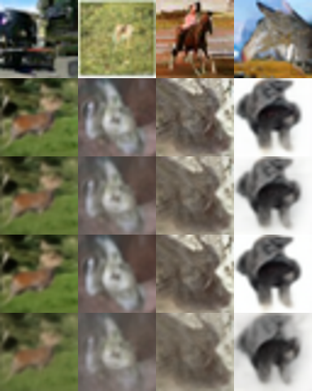
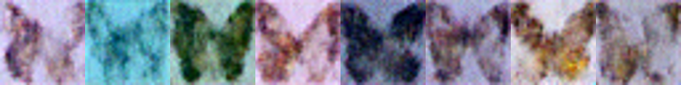

Sampling images from p(x) with no prompt: the generative model families (VAE, GAN, AR/VQ, flow, diffusion, flow matching, consistency), the mid-2026 landscape, FID/KID/precision-recall, and runnable DDPM / DiT / consistency-model code.
Author
Benedict Thekkel
1. What is Unconditional Image Generation?
Learn a distribution over images from a training set, then draw new samples from it. No text prompt, no input image, no class label - the only input is noise (a random seed).
\[x \sim p_\theta(x), \qquad x = G_\theta(z), \quad z \sim \mathcal{N}(0, I)\]
Input. A latent/noise tensor z (and a seed). That is all. The same seed always reproduces the same image, which is why “the latent space” is the only handle you have on the output.
Output. An image tensor in [-1, 1] or [0, 1], converted to RGB.
Be honest about the framing. Pure unconditional generation is, in mid-2026, mostly a research and teaching task rather than a product one. Text conditioning won, because a prompt is what users actually want (see 04_Text_to_Image). But this task is still the right place to stand for three reasons:
It is the cleanest lens on generative modelling itself - no conditioning signal to hide behind, so a family’s mode coverage and sample fidelity are exposed directly.
It is what you actually deploy in narrow domains: medical-imaging augmentation, materials/microscopy data, anomaly-detection baselines (reconstruct-and-compare), texture/sprite generation, synthetic pretraining data.
Class-conditional ImageNet generation - the benchmark where DiT, SiT, flow matching, and the distillation results that power modern text-to-image were actually proven - lives under this task, not under text-to-image.
Neighbouring tasks:
Task
Difference
Where in this series
Text-to-image
Same sampler, conditioned on a text embedding via cross-attention
04_Text_to_Image
Image-to-image / inpainting
Conditioned on a source image (or mask)
06_Image_to_Image
Image-to-video
Conditioned on a first frame, generates a time axis
07_Image_to_Video
Representation learning
The encoder half of a VAE/VQ-VAE, used for features not samples
16_Image_Feature_Extraction
Anomaly detection
Uses p(x) (or reconstruction error) to score, not to sample
-
Class-conditional generation, p(x | y) for a small label set, is the same machinery with a class embedding added - so it lives here too, and it is where the state-of-the-art numbers are reported.
2. Real-World Use Cases
Nobody ships “generate a random image” as a feature. What ships is unconditional (or narrowly class-conditional) sampling inside a pipeline, where the point is the distribution, not the picture.
Use case
Domain
Consumes / produces
Dominant constraint
Synthetic training data for rare pathologies
Medical imaging (chest X-ray, histology, MRI)
Noise -> synthetic scans that augment a tiny real cohort
Fidelity to clinical distribution; privacy (no memorised patients); regulatory audit trail
Anomaly detection by reconstruction
Manufacturing QA (MVTec-style), industrial vision
Learn p(normal); score defects by reconstruction error / likelihood
Must model only normal data; low false-positive rate; edge inference
Materials and microscopy synthesis
Science (crystal, alloy, cell imaging)
Noise -> plausible microstructures for simulation
Physical plausibility, not aesthetics; small training sets
Face/avatar priors and identity-free assets
Games, stock media, privacy tooling
Noise -> photoreal faces that belong to nobody (thispersondoesnotexist, StyleGAN)
1-shot latency, high resolution, editable latent space
Noise -> samples used to test detectors and fingerprints
Coverage of the model’s actual output distribution
What the FID number hides. An FID of 2.1 on ImageNet 256 is computed from 50,000 samples with a specific Inception backbone, a specific resize, and usually classifier-free guidance tuned for that metric - it is not a statement about the image you are looking at. Four production realities it does not capture:
Memorisation. Small-dataset generators (the medical case, exactly the one where it matters most) copy training images. FID rewards copying. You must run a nearest-neighbour check against the training set before shipping anything trained on patient data.
Mode collapse vs blur. FID conflates fidelity and diversity into one scalar, so a sharp generator that covers half the distribution can beat a blurry one that covers all of it. Precision/recall for generative models is the metric that actually diagnoses this (section 4).
NFE is the deployment cost. A 1000-step DDPM and a 1-step consistency model can have similar FID and a 1000x difference in latency. The sampler and step count, not the weights, dominate the bill.
Domain shift on tiny data. These models are trained on datasets of thousands, not billions, of images. A generator trained on one scanner’s output produces that scanner’s artefacts, faithfully, forever.
3. How Modern Unconditional Generation Works
This is the one task where you should learn the families, not a model list. Each family is a different answer to “how do I turn a tractable noise distribution into an intractable image distribution”.
1. VAE (2013). Encoder q(z|x), decoder p(x|z), trained by maximising the ELBO (reconstruction + KL to a Gaussian prior). Gives you an explicit likelihood bound and a genuinely useful latent space - but the Gaussian likelihood term averages over ambiguity, so samples are blurry. Almost no one uses a VAE as the final generator any more; nearly everyone uses one as the tokenizer/compressor underneath a latent diffusion or AR model. That is the VAE’s real legacy.
2. GAN (2014 -> StyleGAN2/3, 2020-2021). A generator and a discriminator play a minimax game. No likelihood, no ELBO, just “fool the critic” - which produces sharp samples in one forward pass (NFE = 1). Costs: unstable training, and mode collapse (the generator drops parts of the distribution and the metric barely notices). StyleGAN2/3 is still the best-in-class choice for a narrow domain at high resolution with a tight latency budget (faces, textures), and its w latent space remains the most editable one anybody has built. R3GAN (Jan 2025, “The GAN is dead; long live the GAN!”) stripped StyleGAN2’s tricks down to a regularised relativistic loss on a plain ResNet and beat it (FFHQ FID 2.75) - GANs are not dead, they are just no longer where the frontier is.
3. Autoregressive / VQ (2016 -> 2024). PixelCNN factorised p(x) over pixels; VQ-VAE and VQGAN made it tractable by autoregressing over a discrete token grid from a learned codebook. Exact likelihood over tokens, but slow sequential sampling and a lossy tokenizer ceiling. This family came back in 2024: VAR (NeurIPS 2024 best paper) replaced raster-scan next-token with coarse-to-fine next-scale prediction (ImageNet 256 FID 1.73, ~20x faster than raster AR), and MAR (“Autoregressive Image Generation without Vector Quantization”) dropped the codebook entirely by modelling each continuous token with a small diffusion head (MAR-H, 943M, FID 1.55). The AR-vs-diffusion boundary is now blurry by construction.
4. Normalizing flows (2015-2020, and back in 2025). Stack invertible maps with tractable Jacobians, get exact log-likelihood and exact inversion. Long treated as historical - the invertibility constraint cost too much capacity. Apple’s TarFlow (2024) and STARFlow (2025, ~3B, latent-space) showed transformer autoregressive flows scale to high-resolution synthesis after all. Still a minority family, but no longer a museum piece.
5. Diffusion / score-based (DDPM 2020). Define a fixed forward process that adds Gaussian noise over T steps; train a network to predict the noise (equivalently, the score) at a random timestep; sample by reversing it. Training is a plain MSE regression - stable, no adversarial game, excellent mode coverage - and quality beat GANs by 2021 (“Diffusion Models Beat GANs”). The cost is NFE: naive DDPM ancestral sampling needs 1000 network evaluations. DDIM (2020) made the sampler deterministic and non-Markovian, cutting it to 50 with little loss. Score SDE (2021) unified the discrete and continuous views. Latent diffusion (2022) moved the process into a VAE latent, which is what made high-res practical. DiT (2023) replaced the U-Net with a transformer on latent patches and proved the scaling law (ImageNet 256 FID 2.27) - that architecture is the direct ancestor of every modern text-to-image backbone.
6. Flow matching / rectified flow (2022-2026, current default). Train a velocity field to transport noise to data along a straight probability path, with a simple regression objective: v_theta(x_t, t) ~= x_1 - x_0 on linear interpolants. Diffusion is a special case - a particular (curved, variance-preserving) probability path - so flow matching subsumes it and generalises it. Straighter paths mean the ODE solver needs fewer steps, and the objective is better-conditioned. SiT showed the same DiT backbone trained as a flow beats it; REPA / REPA-E / LightningDiT added representation alignment to the tokenizer/backbone and pushed class-conditional ImageNet 256 to roughly FID 1.1-1.3. This is what the 2025-2026 frontier is built on.
7. Distillation and few-step samplers (2023-2026). Given a trained diffusion/flow teacher, learn a student that jumps: consistency models (2023) map any point on a trajectory to its endpoint, giving 1-2 step sampling; MeanFlow (2025) learns average velocity for genuine 1-NFE generation (ImageNet 256 FID 3.43 at NFE=1); FACM, IMM and W-Flow-style methods pushed 1-step to ~1.3-1.7 FID during 2025-2026. This is where the GAN’s one-shot speed finally came back without the adversarial training.
Family trade-off cheat sheet:
Family
Sample quality
Mode coverage
Sampling NFE
Training stability
Exact likelihood
Useful latent
VAE
poor (blurry)
good
1
very stable
ELBO (lower bound)
yes - the reason it survives
GAN (StyleGAN2/3, R3GAN)
excellent
weak (mode collapse)
1
fragile
no
yes (w space, editable)
AR / VQ (VQGAN, VAR, MAR)
excellent
good
~10 (VAR) to ~256+ (raster)
stable
yes (over tokens)
discrete tokens
Normalizing flow (STARFlow)
good
good
1-few
stable
exact
invertible
Diffusion (DDPM/DDIM/LDM/DiT)
excellent
excellent
20-1000
very stable
ELBO
via the VAE, not the diffusion
Flow matching (SiT, LightningDiT)
best
excellent
10-50
very stable
ODE log-det (computable)
same as above
Consistency / distilled (CM, MeanFlow)
very good
inherits teacher
1-4
needs a teacher
no
-
Who leads mid-2026: flow-matching transformers with representation alignment (LightningDiT/REPA-E class) hold the ImageNet 256 record; distilled few-step variants (FACM, MeanFlow, W-Flow) hold the 1-2 NFE record and are close behind on quality; GANs hold the “one narrow domain, one forward pass, 1024px” niche; VAEs hold the tokenizer slot underneath everything else. For truly unconditional ImageNet (no labels at all), RCG (self-supervised representation-conditioned generation) is the headline result at FID ~2.15 - it works by generating a representation first, then an image conditioned on it, which is a quiet admission that unconditional generation is easiest when you invent your own conditioning.
4. Evaluation Metrics
You are comparing two distributions, not two images, so every metric here embeds samples with a pretrained network and compares the resulting feature clouds.
Frechet Inception Distance (FID) - the standard. Embed N real and N generated images with InceptionV3 (pool3, 2048-d), fit a Gaussian to each, and take the Frechet (2-Wasserstein) distance between them:
Lower is better. SOTA on CIFAR-10 is ~2, on class-conditional ImageNet 256 ~1.1-1.3.
FID’s caveats are severe, and everyone ignores them:
Sample-count sensitivity. FID is a biased estimator: it falls as N grows. 10k samples and 50k samples give different numbers for the same model, so a comparison is only valid at equal N (the convention is 50k). A 32-sample FID, like the ones people put in notebooks, is nearly meaningless - the 2048x2048 covariance is rank-deficient.
The backbone is the metric. FID measures distance in InceptionV3’s feature space, trained on ImageNet classification in 2015. It is blind to things Inception is blind to, and sensitive to things it is sensitive to. Swap in DINOv2 features and model rankings change.
Resizing and JPEG artefacts move it. Bilinear vs bicubic resize to 299x299, PIL vs TF resizing, PNG vs JPEG - each is worth tenths of a point, i.e. more than the gap between competing papers.
It conflates fidelity and diversity. One scalar cannot tell you whether your model makes bad images or too few different images.
Inception Score (IS).\(\mathrm{IS} = \exp\left(\mathbb{E}_x\, D_{KL}(p(y|x) \,\|\, p(y))\right)\) - high when each sample is confidently one class and the classes are spread out. Deprecated: it never looks at the real data at all, so it cannot detect memorisation, it saturates, and it is meaningless off ImageNet.
Kernel Inception Distance (KID). Squared MMD between the two feature sets with a polynomial kernel \(k(x,y) = \left(\frac{1}{d} x^\top y + 1\right)^3\). It is unbiased, so it is the right choice for small sample counts - which is exactly the regime a notebook lives in.
Precision and Recall for generative models (Kynkaanniemi et al., 2019) - the metric that actually diagnoses your model. Estimate each distribution’s support as the union of k-NN balls around its samples, then:
Precision = fidelity (do my samples look like real data?), Recall = diversity/coverage (does my model cover the real data?). A mode-collapsed GAN reads high precision / low recall. A blurry VAE reads low precision / high recall. FID cannot tell those apart; this can. Density and Coverage (Naeem et al., 2020) are the robust-to-outliers replacements and are what modern papers report.
Speed: NFE (number of function evaluations) - how many times the network runs per image. It, not parameter count, decides latency: DDPM 1000, DDIM 50, DPM-Solver++ 20, distilled 1-4, GAN 1.
The cell below implements FID, KID and precision/recall on fabricated Gaussian feature sets, and sweeps the generated distribution towards the real one so you can watch the metrics move (and watch precision and recall move differently).
import numpy as npfrom scipy import linalgdef fid_from_features(f_real, f_gen):"Frechet distance between two feature clouds (the FID formula, any backbone)." mu_r, mu_g = f_real.mean(0), f_gen.mean(0) sig_r = np.cov(f_real, rowvar=False) sig_g = np.cov(f_gen, rowvar=False) covmean, _ = linalg.sqrtm(sig_r @ sig_g, disp=False)if np.iscomplexobj(covmean): # numerical noise in sqrtm of a near-singular product covmean = covmean.real diff = mu_r - mu_greturnfloat(diff @ diff + np.trace(sig_r + sig_g -2* covmean))def kid_from_features(f_real, f_gen):"Unbiased squared MMD with the cubic polynomial kernel (KID). Better than FID at small N." d = f_real.shape[1] k =lambda a, b: (a @ b.T / d +1.0) **3 m, n =len(f_real), len(f_gen) kxx, kyy, kxy = k(f_real, f_real), k(f_gen, f_gen), k(f_real, f_gen) np.fill_diagonal(kxx, 0) # unbiased: drop the self-similarity terms np.fill_diagonal(kyy, 0)returnfloat(kxx.sum() / (m * (m -1)) + kyy.sum() / (n * (n -1)) -2* kxy.mean())def precision_recall(f_real, f_gen, k=3):"k-NN manifold precision (fidelity) and recall (coverage), Kynkaanniemi et al. 2019."def radii(f): # distance to the k-th nearest neighbour of each sample d = np.linalg.norm(f[:, None, :] - f[None, :, :], axis=-1)return np.sort(d, axis=1)[:, k] # column 0 is the point itselfdef in_manifold(query, ref, ref_radii): d = np.linalg.norm(query[:, None, :] - ref[None, :, :], axis=-1)return (d <= ref_radii[None, :]).any(axis=1).mean()return (float(in_manifold(f_gen, f_real, radii(f_real))), # precisionfloat(in_manifold(f_real, f_gen, radii(f_gen))), # recall )rng = np.random.default_rng(0)D, N =16, 256real = rng.normal(size=(N, D)) # the "real" feature cloudprint(f"{'shift':>6}{'FID':>8}{'KID':>9}{'precision':>10}{'recall':>8}")for shift in [2.0, 1.0, 0.5, 0.25, 0.0]: gen = rng.normal(size=(N, D)) *0.9+ shift # generated: offset + slightly under-dispersed p, r = precision_recall(real, gen)print(f"{shift:6.2f}{fid_from_features(real, gen):8.3f}{kid_from_features(real, gen):9.4f}{p:10.3f}{r:8.3f}")# Now the diagnosis FID cannot make: a mode-collapsed generator (tight cluster, correct# location) vs a blurry one (correct spread, smeared). Both can score a similar FID.collapsed = rng.normal(size=(N, D)) *0.25# sharp but covers little -> high precision, low recallblurry = rng.normal(size=(N, D)) *1.8# covers everything and more -> low precision, high recallfor name, f in [("mode-collapsed", collapsed), ("blurry/over-dispersed", blurry)]: p, r = precision_recall(real, f)print(f"{name:22s} FID {fid_from_features(real, f):7.3f} precision {p:.3f} recall {r:.3f}")# ... and chart the sweep: FID collapses towards 0 while precision and recall move apart.from pyecharts import options as optsfrom pyecharts.charts import Lineshifts = [2.0, 1.0, 0.5, 0.25, 0.0]rng = np.random.default_rng(1)fids, kids, precs, recs = [], [], [], []for s in shifts: g = rng.normal(size=(N, D)) *0.9+ s fids.append(round(fid_from_features(real, g), 3)) kids.append(round(kid_from_features(real, g), 4)) p, r = precision_recall(real, g) precs.append(round(p, 3)) recs.append(round(r, 3))line = ( Line() .add_xaxis([str(s) for s in shifts]) .add_yaxis("FID", fids, is_smooth=True) .add_yaxis("precision", precs, yaxis_index=1, is_smooth=True) .add_yaxis("recall", recs, yaxis_index=1, is_smooth=True) .extend_axis(yaxis=opts.AxisOpts(name="precision / recall", min_=0, max_=1)) .set_global_opts( title_opts=opts.TitleOpts( title="Toy metrics as the generated distribution approaches the real one", subtitle="16-d Gaussian features, N=256. FID -> 0 as the shift closes; precision/recall saturate.", ), xaxis_opts=opts.AxisOpts(name="mean shift of generated features"), yaxis_opts=opts.AxisOpts(name="FID"), tooltip_opts=opts.TooltipOpts(trigger="axis"), ))line.render_notebook()
/tmp/ipykernel_1191346/878326728.py:10: DeprecationWarning: The `disp` argument is deprecated and will be removed in SciPy 1.18.0.
covmean, _ = linalg.sqrtm(sig_r @ sig_g, disp=False)
5. Datasets
Unconditional generation is benchmarked on a handful of fixed datasets, and the dataset is part of the metric - “FID 2.1” means nothing without “on what, at what resolution, against which reference statistics”.
This notebook samples from models pretrained on CIFAR-10, CelebA-HQ and ImageNet, uses a slice of CIFAR-10 test as the real reference set for the benchmark’s distribution-distance proxy, and trains its toy from-scratch model on smithsonian_butterflies_subset (1k images, CC0, ~100 MB - small enough to fit this machine).
Gating:ILSVRC/imagenet-1k requires accepting terms on the Hub; FFHQ is non-commercial. The pretrained ImageNet models (DiT, consistency models) are freely downloadable regardless - you only need the dataset to compute reference FID statistics or to train.
6. The Model Landscape (mid-2026)
The leaderboards for this task are Papers-with-Code: Image Generation on ImageNet 256x256 (class-conditional, the main arena) and Image Generation on CIFAR-10. Note the asymmetry that defines this task in 2026: the frontier models mostly have no diffusers pipeline. They are research repos with a sample.py. The models you can actually load in one line are the 2020-2023 classics - which is fine, because they teach the mechanics, and the mechanics are the point.
Who wins what.Quality: flow-matching DiTs with representation alignment (LightningDiT/REPA-E). Speed: distilled 1-step models and GANs (NFE 1) - a consistency model gives you ~90% of the quality at 1/50th the latency. Size: the 35M DDPM CIFAR UNet does a real job in 140 MB. Narrow domain at 1024px on a deadline: still StyleGAN. Tie that back to section 2: the medical-augmentation and anomaly-detection use cases care about coverage (so diffusion/flow), the game-asset and avatar cases care about NFE (so GAN or distilled), and the research-benchmark case cares about a number that needs 50k samples and a fixed protocol.
Fits a 12 GB card? Everything in the “runnable” column, comfortably (the largest, DiT-XL/2, is ~1.4 GB in fp16). VAR-d30 (2B) and STARFlow (3B) are borderline-to-over in fp16 and have no diffusers pipeline, so they stay in the table.
7. Setup
Package roles:
diffusers + torch - all the samplers and pipelines (DDPMPipeline, DiTPipeline, ConsistencyModelPipeline) and the schedulers we swap between. diffusers is the general-purpose Hugging Face library for generative image models, the same ecosystem as transformers - it is not a vendor package.
transformers - DINOv2, used as the feature backbone for the benchmark’s distribution-distance proxy.
datasets - CIFAR-10 (real reference images) and the butterflies set (from-scratch training).
All downloads (HF model cache, datasets) land in DL_tasks/datasets/, which is gitignored.
# Generative image models load through Hugging Face `diffusers` - the general-purpose# HF library for this family, same ecosystem as transformers. No vendor packages.# %pip install -q torch diffusers transformers datasets accelerate scipy pyecharts# Optional extra for the interactive seed demo (section 15)# %pip install -q ipywidgets
import ctypesimport ctypes.utilimport gcimport timefrom pathlib import Pathimport torchfrom dotenv import find_dotenv, load_dotenv# Knowledge/.env sets HF_TOKEN - authenticated HF Hub requests get higher rate limitsload_dotenv(find_dotenv(usecwd=True))device ="cuda:0"if torch.cuda.is_available() else"cpu"dtype = torch.float16 if device !="cpu"else torch.float32if device !="cpu":print(torch.cuda.get_device_name(0))print("device:", device)def vram(tag=""):"Report current GPU memory (allocated / reserved). No-op on CPU."if torch.cuda.is_available(): alloc = torch.cuda.memory_allocated() /1e9 reserved = torch.cuda.memory_reserved() /1e9print(f"VRAM {tag:20s}{alloc:5.2f} GB allocated / {reserved:5.2f} GB reserved")def free_memory():"Collect garbage, empty the CUDA cache, and return freed CPU RAM to the OS." gc.collect()if torch.cuda.is_available(): torch.cuda.empty_cache() torch.cuda.ipc_collect()# glibc keeps freed CPU allocations in its arenas instead of returning them# to the OS, so RSS compounds across model sections (cpu-offloaded weights# live in system RAM). malloc_trim(0) hands the freed arenas back. See# dl-visualization-and-memory.instructions.md - not optional on a 12 GB box.try: ctypes.CDLL(ctypes.util.find_library("c") or"libc.so.6").malloc_trim(0)exceptException:pass# All downloads go to DL_tasks/datasets/ (gitignored)DATA_DIR = Path("../../datasets")DATA_DIR.mkdir(exist_ok=True)HF_CACHE =str(DATA_DIR /"hf_cache")
NVIDIA GeForce RTX 3060
device: cuda:0
from datasets import load_datasetfrom diffusers.utils import make_image_grid# Real reference images for the benchmark's distribution-distance proxy (section 14).# A 200-image slice of the CIFAR-10 test split - the same distribution google/ddpm-cifar10-32# was trained on, so a well-behaved sampler should land close to it in feature space.cifar_real = load_dataset("uoft-cs/cifar10", split="test[:200]", cache_dir=HF_CACHE)real_images = [row["img"].convert("RGB") for row in cifar_real]# The narrow-domain set for the from-scratch training section (1k CC0 images).butterflies = load_dataset("huggan/smithsonian_butterflies_subset", split="train", cache_dir=HF_CACHE)print("real CIFAR-10 reference images:", len(real_images), real_images[0].size)print("butterflies:", butterflies)# What the target distributions actually look like (raw image display, not a chart)make_image_grid([im.resize((96, 96)) for im in real_images[:8]], rows=1, cols=8)
Repo card metadata block was not found. Setting CardData to empty.
8. DDPM on CIFAR-10 (the reference implementation)
google/ddpm-cifar10-32 is the original Ho et al. 2020 checkpoint: a 35.7M-parameter pixel-space U-Net trained on CIFAR-10 at 32x32 (Inception Score 9.46, FID 3.17 - state of the art when published, still respectable). It is the cheapest honest diffusion model in existence and therefore the right one to experiment on.
DDPMPipeline runs the ancestral sampler: 1000 denoising steps, each one a full U-Net forward pass. That is NFE = 1000, and you will feel it - which is exactly the lesson.
The sampling loop, in five lines of pseudocode:
x_T ~ N(0, I)
for t = T .. 1:
eps = unet(x_t, t) # predict the noise that was added
x_{t-1} = scheduler.step(eps, t, x_t) # subtract a bit of it, add a bit of fresh noise
return x_0
from diffusers import DDPMPipeline# fp16 halves VRAM and roughly doubles throughput. If you ever see black/NaN outputs on# an older card, drop torch_dtype - these U-Nets are small enough to run fp32 anywhere.ddpm = DDPMPipeline.from_pretrained("google/ddpm-cifar10-32", torch_dtype=dtype, cache_dir=HF_CACHE).to(device)print(f"UNet params: {sum(p.numel() for p in ddpm.unet.parameters()) /1e6:.1f}M")vram("ddpm-cifar10 loaded")g = torch.Generator(device=device).manual_seed(0)t0 = time.perf_counter()out = ddpm(batch_size=8, num_inference_steps=1000, generator=g) # NFE = 1000elapsed = time.perf_counter() - t0print(f"1000-step DDPM: {elapsed:.1f}s for 8 images ({elapsed /8:.2f}s/image)")# Keep `ddpm` alive - sections 9, 14 and 15 reuse the same weights with different schedulers.make_image_grid([im.resize((96, 96)) for im in out.images], rows=1, cols=8)
9. The Scheduler Swap: DDPM vs DDIM vs DPM-Solver++
This is the single most instructive experiment in the notebook. The weights do not change. The training does not change. Only the sampler - the rule for stepping backwards through the noise schedule - changes, and inference gets 20-50x faster for a barely perceptible quality cost.
DDPM (ancestral, stochastic): follows the Markov chain the model was trained on. 1000 steps. Injects fresh noise at every step, so the same seed with a different step count gives a different image.
DDIM (2020): reinterprets the same trained model as a deterministic, non-Markovian ODE. You can skip timesteps. 50 steps is the usual sweet spot, 20 is often fine. Being deterministic, it makes the initial noise a genuine latent code - which is what makes the interpolation in section 10 possible at all.
DPM-Solver++ (2022): a tailored high-order ODE solver for the diffusion ODE. Converges in ~20 steps, sometimes 10.
In diffusers the swap is one line, because the scheduler is a separate object from the weights:
That decoupling is why “which sampler” is a deployment decision, not a training one.
from diffusers import DDIMScheduler, DDPMScheduler, DPMSolverMultistepSchedulerbase_config = ddpm.scheduler.config # keep the original DDPM config to restore fromconfigs = [ ("DDPM 1000 steps", DDPMScheduler.from_config(base_config), 1000), ("DDIM 50 steps", DDIMScheduler.from_config(base_config), 50), ("DDIM 20 steps", DDIMScheduler.from_config(base_config), 20), ("DPM++ 20 steps", DPMSolverMultistepScheduler.from_config(base_config), 20), ("DDIM 10 steps", DDIMScheduler.from_config(base_config), 10),]panels = []for name, sched, steps in configs: ddpm.scheduler = sched g = torch.Generator(device=device).manual_seed(7) # same seed for every sampler t0 = time.perf_counter() imgs = ddpm(batch_size=4, num_inference_steps=steps, generator=g).images dt = time.perf_counter() - t0print(f"{name}{dt:6.1f}s {dt /4:5.2f}s/image (NFE={steps})") panels.extend(im.resize((96, 96)) for im in imgs)ddpm.scheduler = DDPMScheduler.from_config(base_config) # restore the defaultvram("after scheduler sweep")# One row per sampler, top to bottom in the order above. Quality degrades gracefully;# latency does not - that is the whole point.make_image_grid(panels, rows=len(configs), cols=4)
DDPM 1000 steps 8.1s 2.01s/image (NFE=1000)
DDIM 50 steps 0.4s 0.10s/image (NFE=50)
DDIM 20 steps 0.2s 0.04s/image (NFE=20)
DPM++ 20 steps 0.2s 0.04s/image (NFE=20)
DDIM 10 steps 0.1s 0.02s/image (NFE=10)
VRAM after scheduler sweep 0.08 GB allocated / 0.16 GB reserved

10. Higher Resolution and Latent Interpolation (CelebA-HQ 256)
google/ddpm-celebahq-256 is the same DDPM recipe at 256x256 on 30k aligned faces. Two things to show here:
A pixel-space diffusion model at 256px is expensive. The U-Net now runs on 3x256x256 tensors; this is exactly the cost that latent diffusion (2022) was invented to remove by moving the process into a VAE latent 8x smaller per side.
The initial noise is a latent code. Under a deterministic sampler (DDIM), the map noise -> image is a function, so you can interpolate between two noise tensors and get a smooth walk through image space. Interpolate on the great circle (spherical linear interpolation, slerp), not the straight line: a straight line between two samples of N(0, I) passes through the low-norm centre of the ball, where the model has essentially never seen a sample, and you get washed-out mush in the middle.
To inject our own latents we call the U-Net and scheduler directly instead of using the pipeline’s __call__ - which also shows you that the “pipeline” is a very thin wrapper.
from diffusers import DDIMPipelinedel ddpm # free the CIFAR model before loading a bigger one - one model live at a timefree_memory()vram("after freeing cifar ddpm")face = DDIMPipeline.from_pretrained("google/ddpm-celebahq-256", torch_dtype=dtype, cache_dir=HF_CACHE).to(device)vram("celebahq loaded")@torch.inference_mode()def sample_from_latents(pipe, latents, num_steps):"Run the denoising loop by hand so we can supply our own starting noise." pipe.scheduler.set_timesteps(num_steps) x = latents * pipe.scheduler.init_noise_sigmafor t in pipe.scheduler.timesteps: eps = pipe.unet(x, t).sample # predicted noise x = pipe.scheduler.step(eps, t, x).prev_sample # one step back down the chain x = (x /2+0.5).clamp(0, 1).float().cpu() # [-1,1] -> [0,1], off the GPUreturn pipe.numpy_to_pil(x.permute(0, 2, 3, 1).numpy())def slerp(a, b, w):"Spherical interpolation between two Gaussian latents (stay on the shell of the ball)." a_n, b_n = a / a.norm(), b / b.norm() omega = torch.acos((a_n * b_n).sum().clamp(-1, 1)) so = torch.sin(omega)if so.abs() <1e-6:return (1- w) * a + w * breturn (torch.sin((1- w) * omega) / so) * a + (torch.sin(w * omega) / so) * b# Build the latents in fp32 (a 3x256x256 fp16 norm would overflow at 65504) and cast after.shape = (3, face.unet.config.sample_size, face.unet.config.sample_size)z0 = torch.randn(shape, generator=torch.Generator("cpu").manual_seed(11)).to(device)z1 = torch.randn(shape, generator=torch.Generator("cpu").manual_seed(42)).to(device)weights = [0.0, 0.25, 0.5, 0.75, 1.0]latents = torch.stack([slerp(z0, z1, w) for w in weights]).to(dtype)t0 = time.perf_counter()walk = sample_from_latents(face, latents, num_steps=30) # DDIM, 30 NFE per imageprint(f"{time.perf_counter() - t0:.1f}s for {len(weights)} faces at 256x256 (30 DDIM steps each)")del facefree_memory()vram("after celebahq")# Endpoints are two independent samples; the middle images are neither, but are still faces.# A model with poor coverage produces artefacts or repeats along this path.make_image_grid([im.resize((160, 160)) for im in walk], rows=1, cols=len(weights))
An error occurred while trying to fetch /home/bthek1/Knowledge/DL/DL_tasks/datasets/hf_cache/models--google--ddpm-celebahq-256/snapshots/cd5c944777ea2668051904ead6cc120739b86c4d: Error no file named diffusion_pytorch_model.safetensors found in directory /home/bthek1/Knowledge/DL/DL_tasks/datasets/hf_cache/models--google--ddpm-celebahq-256/snapshots/cd5c944777ea2668051904ead6cc120739b86c4d.
Defaulting to unsafe serialization. Pass `allow_pickle=False` to raise an error instead.
VRAM celebahq loaded 0.24 GB allocated / 0.25 GB reserved
5.6s for 5 faces at 256x256 (30 DDIM steps each)
VRAM after celebahq 0.01 GB allocated / 0.05 GB reserved
11. DiT-XL/2: Class-Conditional ImageNet (the architecture that won)
facebook/DiT-XL-2-256 (675M) is the model that showed diffusion does not need a U-Net: replace it with a plain transformer operating on latent patches, condition with adaLN-zero, and the FID scales cleanly with compute (ImageNet 256 FID 2.27, SOTA in 2023). Every serious text-to-image backbone shipped since - SD3, FLUX, and the flow-matching DiTs of 2025-2026 - is a descendant of this design, so the fastest way to understand modern T2I is to look at its class-conditional ancestor with the text encoder removed.
Two differences from sections 8-10, both important:
Latent, not pixel. DiT diffuses in a VAE’s 32x32x4 latent, then decodes. That is what makes 256px affordable.
Class-conditional with classifier-free guidance.guidance_scale > 1 extrapolates away from the unconditional prediction, trading diversity for fidelity - the exact same knob as the CFG scale in a text-to-image model (see 04_Text_to_Image), just with a class label instead of a prompt.
License note: DiT’s weights are CC BY-NC 4.0 (non-commercial). Fine for study, not for a product.
from diffusers import DiTPipelinedit = DiTPipeline.from_pretrained("facebook/DiT-XL-2-256", torch_dtype=dtype, cache_dir=HF_CACHE).to(device)dit.scheduler = DPMSolverMultistepScheduler.from_config(dit.scheduler.config) # 25 NFE is enoughprint(f"DiT params: {sum(p.numel() for p in dit.transformer.parameters()) /1e6:.0f}M")vram("DiT loaded")words = ["white shark", "golden retriever", "macaw", "volcano"]class_ids = dit.get_label_ids(words) # maps ImageNet-1k label strings -> class indicesprint(dict(zip(words, class_ids)))g = torch.Generator(device=device).manual_seed(33)t0 = time.perf_counter()images = dit( class_labels=class_ids, num_inference_steps=25, guidance_scale=4.0, # CFG: >1 sharpens and pushes towards the class, at the cost of diversity generator=g,).imagesprint(f"{time.perf_counter() - t0:.1f}s for {len(words)} images at 256x256 (25 steps, CFG 4.0)")del ditfree_memory()vram("after DiT")make_image_grid([im.resize((160, 160)) for im in images], rows=1, cols=len(words))
An error occurred while trying to fetch /home/bthek1/Knowledge/DL/DL_tasks/datasets/hf_cache/models--facebook--DiT-XL-2-256/snapshots/eab87f77abd5aef071a632f08807fbaab0b704d0/vae: Error no file named diffusion_pytorch_model.safetensors found in directory /home/bthek1/Knowledge/DL/DL_tasks/datasets/hf_cache/models--facebook--DiT-XL-2-256/snapshots/eab87f77abd5aef071a632f08807fbaab0b704d0/vae.
Defaulting to unsafe serialization. Pass `allow_pickle=False` to raise an error instead.
An error occurred while trying to fetch /home/bthek1/Knowledge/DL/DL_tasks/datasets/hf_cache/models--facebook--DiT-XL-2-256/snapshots/eab87f77abd5aef071a632f08807fbaab0b704d0/transformer: Error no file named diffusion_pytorch_model.safetensors found in directory /home/bthek1/Knowledge/DL/DL_tasks/datasets/hf_cache/models--facebook--DiT-XL-2-256/snapshots/eab87f77abd5aef071a632f08807fbaab0b704d0/transformer.
Defaulting to unsafe serialization. Pass `allow_pickle=False` to raise an error instead.
Expected types for id2label: (dict[int, str], <class 'NoneType'>), got typing.Dict[str, str].
2.7s for 4 images at 256x256 (25 steps, CFG 4.0)
VRAM after DiT 0.01 GB allocated / 0.05 GB reserved
12. Consistency Models: One-Step Sampling
A consistency model is trained (or distilled from a diffusion teacher) so that every point on a noise-to-image trajectory maps to the same endpoint. If that holds, you can jump from pure noise to a finished image in a single network evaluation - NFE = 1, the same budget as a GAN, without the adversarial training.
openai/diffusers-cd_imagenet64_l2 is the ImageNet-64 class-conditional distillation of an EDM teacher (Song et al., 2023). Compare its 1-step latency with the 1000-step DDPM of section 8: this is the 2023 result that started the few-step race which MeanFlow, FACM and IMM are still running in 2026.
Multi-step sampling is supported by passing explicit timesteps - each extra step buys some fidelity back. 1 -> 2 steps is usually the biggest single jump in quality per unit of latency you will ever see.
from diffusers import ConsistencyModelPipelinecm = ConsistencyModelPipeline.from_pretrained("openai/diffusers-cd_imagenet64_l2", torch_dtype=dtype, cache_dir=HF_CACHE).to(device)vram("consistency model loaded")samples, labels = [], []for label in [145, 88, 279]: # ImageNet-64 classes: king penguin, macaw, arctic fox g = torch.Generator(device=device).manual_seed(5) t0 = time.perf_counter() one = cm(num_inference_steps=1, class_labels=label, generator=g).images[0] # NFE = 1 t_one = time.perf_counter() - t0 g = torch.Generator(device=device).manual_seed(5) t0 = time.perf_counter() two = cm(timesteps=[22, 0], class_labels=label, generator=g).images[0] # NFE = 2 t_two = time.perf_counter() - t0print(f"class {label:3d} 1-step {t_one:5.2f}s 2-step {t_two:5.2f}s") samples.extend([one.resize((128, 128)), two.resize((128, 128))])del cmfree_memory()vram("after consistency model")# Columns alternate 1-step / 2-step for each class. Both cost a fraction of a 1000-step DDPM.make_image_grid(samples, rows=3, cols=2)
Per batch: sample a random timestep t, add that much noise, ask the network to predict the noise it added, take the MSE. No adversarial game, no ELBO bookkeeping, no discriminator to balance - which is precisely why diffusion displaced GANs. scheduler.add_noise implements the closed-form forward process (you never simulate the chain during training).
This is explicitly a toy. A tiny U-Net, 32x32 images, a few hundred optimiser steps on 1000 butterflies. It will not produce good images - real training is tens of thousands of steps on this dataset and far more on a real one. The deliverable is the loss curve and the mechanics; the samples are a punchline, not a result. It is sized to run in a couple of minutes on a 3060 and to stay well inside 12 GB.
import numpy as npimport torch.nn.functional as Ffrom diffusers import DDPMScheduler, UNet2DModelfrom torch.utils.data import DataLoaderfrom torchvision import transformsIMG_SIZE, BATCH, TRAIN_STEPS =32, 16, 400# toy budget: minutes, not hourstf = transforms.Compose([ transforms.Resize((IMG_SIZE, IMG_SIZE)), transforms.RandomHorizontalFlip(), transforms.ToTensor(), transforms.Normalize([0.5], [0.5]), # -> [-1, 1], the range diffusion models live in])def collate(batch):return torch.stack([tf(row["image"].convert("RGB")) for row in batch])# num_workers=0: on a 4-core/12 GB box each worker forks a copy of the parent's RAM# (models already loaded above) and gets OOM-killed. This dataset is tiny, so# main-process loading is fast and safe. See dl-visualization-and-memory.instructions.md.loader = DataLoader(butterflies, batch_size=BATCH, shuffle=True, collate_fn=collate, num_workers=0)# A deliberately small U-Net (~1.5M params). Real checkpoints are 20-100x this.toy = UNet2DModel( sample_size=IMG_SIZE, in_channels=3, out_channels=3, layers_per_block=1, block_out_channels=(32, 64, 64), down_block_types=("DownBlock2D", "AttnDownBlock2D", "DownBlock2D"), up_block_types=("UpBlock2D", "AttnUpBlock2D", "UpBlock2D"),).to(device) # train in fp32: 1.5M params is nothing, and fp16 training needs a GradScalerprint(f"toy UNet params: {sum(p.numel() for p in toy.parameters()) /1e6:.2f}M")noise_sched = DDPMScheduler(num_train_timesteps=1000)opt = torch.optim.AdamW(toy.parameters(), lr=2e-4)losses, step = [], 0t0 = time.perf_counter()while step < TRAIN_STEPS:for clean in loader: clean = clean.to(device) noise = torch.randn_like(clean) # epsilon t = torch.randint(0, noise_sched.config.num_train_timesteps, (clean.size(0),), device=device) noisy = noise_sched.add_noise(clean, noise, t) # closed-form forward process pred = toy(noisy, t).sample # epsilon_theta(x_t, t) loss = F.mse_loss(pred, noise) # THE objective loss.backward() opt.step() opt.zero_grad(set_to_none=True) losses.append(loss.item()) # .item() -> a float, so no graph is retained step +=1if step %100==0:print(f"step {step:4d} loss {np.mean(losses[-100:]):.4f}")if step >= TRAIN_STEPS:breakprint(f"trained {TRAIN_STEPS} steps in {time.perf_counter() - t0:.1f}s")del clean, noise, noisy, pred, loss, opt, loader # drop batch tensors and the optimizer statefree_memory()vram("after toy training")# What 400 steps buys you: blobs with roughly the right colour statistics and nothing else.# That is the honest result, and it is why nobody trains these from scratch on a laptop.toy_pipe = DDPMPipeline(unet=toy.eval(), scheduler=DDPMScheduler(num_train_timesteps=1000))toy_pipe.to(device)g = torch.Generator(device=device).manual_seed(0)toy_samples = toy_pipe(batch_size=8, num_inference_steps=200, generator=g).imagesdel toy_pipe, toyfree_memory()vram("after toy sampling")make_image_grid([im.resize((96, 96)) for im in toy_samples], rows=1, cols=8)
toy UNet params: 1.11M
step 100 loss 0.3111
step 200 loss 0.1214
step 300 loss 0.0936
step 400 loss 0.0730
trained 400 steps in 26.5s
VRAM after toy training 0.03 GB allocated / 0.07 GB reserved
VRAM after toy sampling 0.02 GB allocated / 0.07 GB reserved

from pyecharts.charts import Line as EchartsLine# Smooth the very noisy per-step loss (the timestep t is resampled every batch, so a single# step's loss says almost nothing). The trend is what matters.w =20smooth = [round(float(np.mean(losses[max(0, i - w):i +1])), 4) for i inrange(len(losses))]curve = ( EchartsLine() .add_xaxis([str(i) for i inrange(len(smooth))]) .add_yaxis("MSE (20-step moving average)", smooth, is_smooth=True, symbol="none") .set_global_opts( title_opts=opts.TitleOpts( title="Toy DDPM training: epsilon-prediction loss", subtitle=f"{TRAIN_STEPS} steps, 1.5M-param UNet, 32px butterflies - a demo, not a model", ), xaxis_opts=opts.AxisOpts(name="optimizer step"), yaxis_opts=opts.AxisOpts(name="MSE loss"), tooltip_opts=opts.TooltipOpts(trigger="axis"), ))curve.render_notebook()
14. Head-to-head Benchmark: the Sampler/Step-Count Sweep
The honest benchmark for this task is not a model bake-off - it is a sampler sweep on one set of weights, because that is the axis you actually control at deployment time. Fix google/ddpm-cifar10-32, vary the scheduler and step count, and measure:
latency: seconds per image (and NFE, which predicts it almost perfectly);
a quality proxy: KID between the generated samples and 200 real CIFAR-10 test images, in DINOv2-small feature space.
Read the caveats before you read the numbers.
This is not FID. A real FID needs 10k-50k samples, an InceptionV3 backbone, and a fixed resize protocol. We use 32 samples and a different backbone, so the absolute value is meaningless and only the ordering across step counts carries any signal. We use KID rather than FID precisely because KID is unbiased and therefore the only one of the two that says anything at all at N=32.
We do not fake the missing scale. If you want a real number, generate 50k samples with torchmetrics.image.fid.FrechetInceptionDistance against the full CIFAR-10 statistics - that is roughly an hour on this card at DDIM-50 and about a week at DDPM-1000. The gap between those two sentences is the entire reason few-step sampling is a research field.
Hardware: single RTX 3060 (12 GB), 4 vCPU, fp16.
from transformers import AutoImageProcessor, AutoModel# DINOv2-small (22M) as the feature backbone. The standard is InceptionV3; DINOv2 features are# arguably better for this and are transformers-native, but note that CHANGING THE BACKBONE# CHANGES THE METRIC - never compare our numbers to a published FID.feat_id ="facebook/dinov2-small"processor = AutoImageProcessor.from_pretrained(feat_id, cache_dir=HF_CACHE)featurizer = AutoModel.from_pretrained(feat_id, cache_dir=HF_CACHE).to(device).eval()@torch.inference_mode()def embed(images, batch=32):"CLS-token features (384-d) for a list of PIL images." feats = []for i inrange(0, len(images), batch): px = processor(images=images[i:i + batch], return_tensors="pt").to(device) feats.append(featurizer(**px).last_hidden_state[:, 0].float().cpu().numpy())return np.concatenate(feats)f_real = embed(real_images) # 200 real CIFAR-10 test imagesprint("real feature bank:", f_real.shape)vram("featurizer loaded")
from pyecharts.charts import Bar, Page, Scatterbar = ( Bar() .add_xaxis(df["sampler"].tolist()) .add_yaxis("s / image", df["sec_per_image"].tolist()) .add_yaxis("dino-KID x1000 (lower = closer to real)", df["dino_kid_x1000"].tolist(), yaxis_index=1) .extend_axis(yaxis=opts.AxisOpts(name="dino-KID x1000")) .set_global_opts( title_opts=opts.TitleOpts( title="Sampler sweep on google/ddpm-cifar10-32 (RTX 3060, fp16)", subtitle=f"{N_SAMPLES} samples vs 200 real CIFAR-10 images - a smoke test, NOT a leaderboard FID", ), xaxis_opts=opts.AxisOpts(name="sampler / NFE", axislabel_opts=opts.LabelOpts(rotate=30)), yaxis_opts=opts.AxisOpts(name="seconds per image"), tooltip_opts=opts.TooltipOpts(trigger="axis"), ))quality_vs_speed = ( Scatter() .add_xaxis(df["sec_per_image"].tolist()) .add_yaxis("sampler", [[q, s] for q, s inzip(df["dino_kid_x1000"].tolist(), df["sampler"].tolist())], label_opts=opts.LabelOpts(formatter="{@[1]}", position="right"), ) .set_global_opts( title_opts=opts.TitleOpts( title="Quality proxy vs latency", subtitle="Down-left is better. The knee is the sampler you ship.", ), xaxis_opts=opts.AxisOpts(name="seconds per image", type_="value"), yaxis_opts=opts.AxisOpts(name="dino-KID x1000", type_="value"), tooltip_opts=opts.TooltipOpts(formatter="{c}"), ))Page().add(bar, quality_vs_speed).render_notebook()
15. Interactive Demo: Seed Explorer
With no prompt, the seed is the entire user interface. This widget makes that concrete: move the slider, get a different sample from the same p(x); move the step slider, watch quality trade against latency in real time.
Guarded with try/except so a headless Quarto render or a server without ipywidgets skips it cleanly. The pipeline is freed at the end either way.
# ipywidgets, diffusers and torch are project dependencies - imported here so this# demo runs on its own, without section 8 or 9 having to be executed for their# import lines alone.import timeimport ipywidgets as widgetsimport torchfrom diffusers import DDIMScheduler, DDPMPipelinefrom diffusers.utils import make_image_gridfrom IPython.display import displaydef bootstrap(*names, notebook, sections):"""Make this demo runnable on a cold kernel, without duplicating the notebook. The demo builds on the notebook's setup and helper cells. Instead of making you run them by hand - or copying them in here and letting the copies drift - this reads the notebook file and executes those sections itself, and only when a name is actually missing. Run the notebook top to bottom and it does nothing at all. It stops as soon as every required name exists, so trailing benchmark cells in a section are not run. """ifall(n inglobals() for n in names):returnimport jsonfrom pathlib import Pathfrom IPython.utils.capture import capture_output path = Path(notebook)ifnot path.exists():raiseNameError(f"this demo needs {', '.join(n for n in names if n notinglobals())}, and cannot "f"find {notebook} to bootstrap from (cwd is {Path.cwd()}, expected the notebook's "f"own directory). Run section(s) {'; '.join(sections)} by hand instead." )print(f"cold start: running {'; '.join(sections)} from {notebook} (output suppressed)") heading =Nonefor cell in json.loads(path.read_text())["cells"]: src ="".join(cell["source"])if cell["cell_type"] =="markdown"and src.lstrip().startswith("## "): heading = src.lstrip().splitlines()[0][3:].strip()continueif cell["cell_type"] !="code"ornot heading or"def bootstrap("in src:continueifnotany(heading.startswith(s) for s in sections):continue code ="".join(""if l.lstrip().startswith(("%", "!")) else lfor l in src.splitlines(keepends=True))# The setup cells print tables and display sample images. This demo only# wants the live stream, so swallow their output - errors still propagate.with capture_output():exec(compile(code, f"{notebook} [{heading}]", "exec"), globals())ifall(n inglobals() for n in names):break still = [n for n in names if n notinglobals()]if still:raiseNameError(f"bootstrapped {'; '.join(sections)} but {', '.join(still)} ""are still undefined - the notebook layout may have changed.")# Everything below builds on the notebook's setup cell.bootstrap("device", "dtype", "HF_CACHE", "free_memory", "vram", notebook="08_Unconditional_Image_Generation.ipynb", sections=["7. Setup"])explorer = DDPMPipeline.from_pretrained("google/ddpm-cifar10-32", torch_dtype=dtype, cache_dir=HF_CACHE).to(device)explorer.scheduler = DDIMScheduler.from_config(explorer.scheduler.config) # interactive-fastout_box = widgets.Output()def draw(seed, steps):with out_box: out_box.clear_output(wait=True) g = torch.Generator(device=device).manual_seed(int(seed)) t0 = time.perf_counter() imgs = explorer(batch_size=4, num_inference_steps=int(steps), generator=g).imagesprint(f"seed {seed}, {steps} steps, {time.perf_counter() - t0:.1f}s") display(make_image_grid([im.resize((96, 96)) for im in imgs], rows=1, cols=4))ui = widgets.interactive( draw, seed=widgets.IntSlider(0, 0, 100, 1, description="seed"), steps=widgets.IntSlider(20, 5, 100, 5, description="DDIM steps"),)display(ui)# Run this once you are done playing, to hand the VRAM back.del explorerfree_memory()vram("final")
cold start: running 7. Setup from 08_Unconditional_Image_Generation.ipynb (output suppressed)
VRAM final 0.01 GB allocated / 0.02 GB reserved
16. Common Frameworks
Unconditional generation is the only task in this folder where you are more likely to train a model than to download one - nobody ships an unconditional product, so there is no zoo of domain checkpoints waiting for you. That inverts the usual ecosystem: the training and evaluation frameworks matter most, the serving layer barely exists, and the research frontier lives in standalone repos with CUDA extensions rather than in a library.
DDPMPipeline, DiTPipeline, ConsistencyModelPipeline, every scheduler in section 9, and the train_unconditional.py example that scales section 13 into a real run
Memorisation auditing: search each sample against the training set in feature space before you ship
MIT
Any model trained on sensitive or licensed data. Small-dataset diffusion models copy, and FID does not care
The 2026 default stack is diffusers plus accelerate with EMA, webdataset for input, clean-fid and torchmetrics for scoring, and W&B for watching samples rather than loss. If you have a working model and a latency problem, distillation (section 12) beats every other lever.
The common wrong turn is training from scratch when fine-tuning would do. Fine-tuning google/ddpm-celebahq-256 or a latent UNet on a narrow domain beats a from-scratch run by an enormous margin in both wall clock and final FID, and on this box CIFAR-10 to a competitive FID is a multi-day job. The second is reporting FID alone: it is a single scalar over two distributions, and it cannot distinguish “sharp and repetitive” from “diverse and slightly blurry”.
17. Going Further
Train one properly. The diffusers unconditional training tutorial scales the section-13 loop into a real run (examples/unconditional_image_generation/train_unconditional.py, with EMA, accelerate, and mixed precision). On this box, 64px on a 1k-image domain set for a few hours is realistic; CIFAR-10 to FID ~3 is a multi-day job on one 3060, and ImageNet 256 is not a single-GPU project at all.
Fine-tune instead of training. For a narrow domain, fine-tuning google/ddpm-celebahq-256 or a latent-diffusion UNet beats training from scratch by an enormous margin on both wall clock and FID. DreamBooth/LoRA techniques (see 04_Text_to_Image) transfer directly.
Fewer steps.LCMScheduler, DPMSolverSinglestepScheduler, and the distillation recipes (LCM-LoRA, consistency distillation, adversarial distillation) all target NFE. If you have a working diffusion model and a latency problem, distillation is the highest-leverage thing you can do.
Real metrics.torchmetrics.image.fid.FrechetInceptionDistance and KernelInceptionDistance are the standard implementations; clean-fid fixes the resizing inconsistencies that make published FIDs incomparable. Always report precision/recall or density/coverage alongside FID - a single scalar cannot diagnose mode collapse.
Check for memorisation before you ship a model trained on sensitive data: nearest-neighbour search of each sample against the training set in feature space (see 16_Image_Feature_Extraction). Small-dataset diffusion models copy, and FID rewards it.
Related notebooks.04_Text_to_Image (the same samplers, conditioned on text - which is where all of this actually shipped), 06_Image_to_Image, 07_Image_to_Video, 16_Image_Feature_Extraction (the backbones FID is computed in).